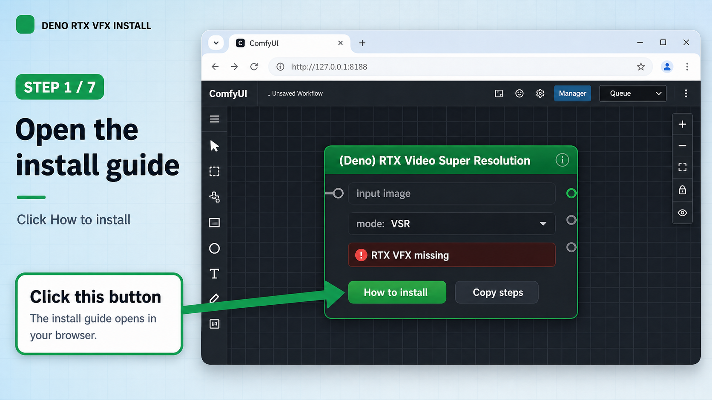

1
Open the install guide from the RTX node

In ComfyUI, add (Deno) RTX Video Super Resolution. If NVIDIA RTX VFX is missing, click How to install.
Do thisClick
How to install in the node panel.Check thisThis visual install page opens in your browser.